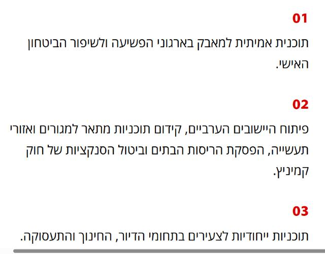
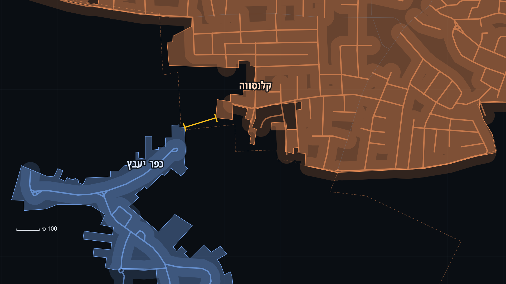
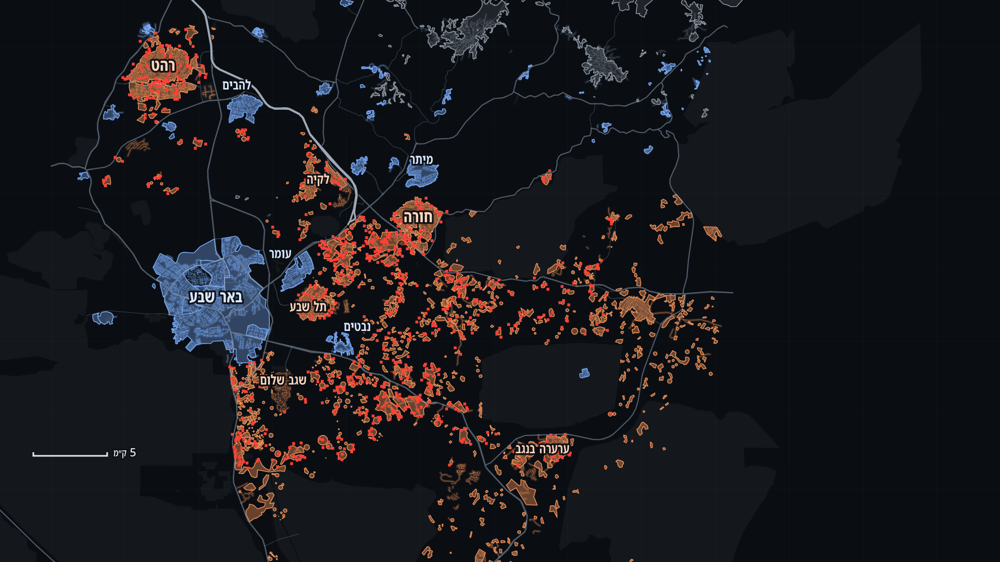

חוק קמיניץ (תיקון 116) מאפשר צו הריסה מינהלי עד חצי שנה מסיום הבנייה (ובבית מגורים עד 30 יום מהאכלוס), וקנסות עד 300,000 / 600,000 ₪.
N12 · 11.10.2026

אחרי 2019 (גנץ), 2020 (ניסנקורן) ו־2021 (רע״ם), הדרישה לבטל את הסנקציות חזרה לשולחן ב־2026.
3. וזה עבד · נתוני המדינה
אלה לא נתונים של ארגון ימין. אלה נתוני המדינה: ירידה של 72% בכל הארץ בשנתיים הראשונות לחוק (1,105 ← 306), וירידה מתמשכת של 56.5% מחוץ למחוז דרום עד 2024 (253 ← 110).
4. המשולש, הגליל והנגב

150 מטר: בין קלנסווה לכפר יעבץOpenStreetMap
עזריאל, טייבה וטירה
ליד מושב עזריאל: היתר ל־25 מ״ר הפך ל־17 מתחמי וילות ובריכות (מעריב). ועדת מזרח השרון לא הוציאה אף צו שנתיים ברציפות. בטייבה אושרו ב־2025 רק 82 דירות בהיתר, ובטירה 28 בלבד.

הנגב: 5,231 פעולות · מעל 100,000 מבנים (רגבים)המחשה
5. המו״מ, סדרי הגודל והפתרון
4,420
4 שנים · כל הארץ
1,105 × 4 (נתוני המדינה)
19,400
4 שנים · הנגב בלבד
404 × 48 (רגבים · בנפרד)
איך פותרים את זה יחד?
אכיפה מוקדמת: איתור אווירי מהיר, גיבוי לוועדות שלא אוכפות, ליווי משטרתי קבוע ושקיפות מלאה. דיור חוקי בתוך היישוב: מתחם פיילוט של 4 עד 6 קומות, פירוק פקק הקרקע המשותפת, מענקי תשתיות מותני אכיפה וחילופי קרקע.
ממשלות מתחלפות. מה שנבנה על הקרקע נשאר לתמיד.
לסרט המלא ולמסמכים: hakibush.com/kaminitz
נובמבר 2026#חוקמיניץ
נתוני המדינה ונתוני רגבים נספרים בנפרד; הערכות ל־4 שנים הן חישוב לפי קצבי העבר שבמקורות, לא נתון רשמי.